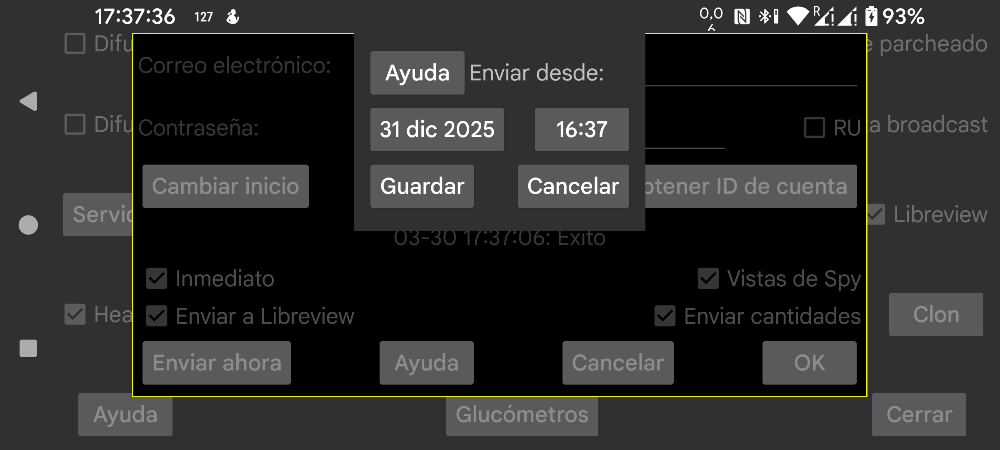

ar de es nl pl ru sv tr uz zh en
Cambia la fecha y la hora a partir de las cuales se envían datos a Libreview. Esto puede ser útil si algunos datos ya están presentes en Libreview, por ejemplo después de usar una conexión clon para transferir datos a otro teléfono y luego usar ese nuevo teléfono para enviarlos a Libreview.